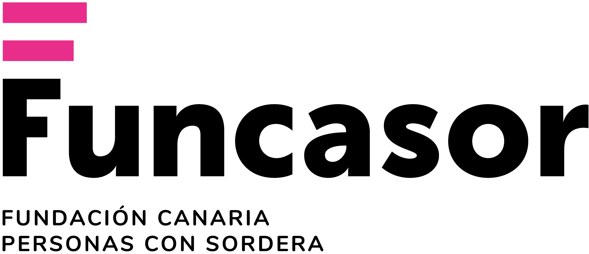
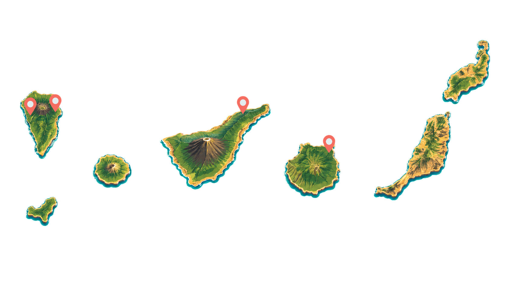

La Palma
Atención cercana y seguimiento coordinado
El servicio adapta los objetivos de escucha, lenguaje y comunicación a las necesidades de la persona y su entorno familiar, educativo o laboral.

Servicio de Logopedia
Una propuesta digital para presentar el trabajo de rehabilitación auditiva de Funcasor en Canarias, con información clara, mapa de presencia activa y actividades breves para entrenar habilidades auditivas.
Servicio activo

La Palma
El servicio adapta los objetivos de escucha, lenguaje y comunicación a las necesidades de la persona y su entorno familiar, educativo o laboral.
Habilidades auditivas de Erber
Seguimos la progresión de habilidades auditivas descrita por Erber, tal como se trabaja en la intervención: primero advertir el sonido y, poco a poco, llegar a comprender el mensaje. Selecciona una fase para ver su explicación y practicarla.
La persona aprende a advertir la presencia o ausencia de sonido. Es la base para responder a la voz, sonidos ambientales y señales de alerta.
Juegos y ejercicios
Los juegos de Erber siguen la progresión de habilidades auditivas. Los otros juegos trabajan aspectos complementarios: la comprobación diaria de la audición, los contrastes entre fonemas y la memoria.
Erber · Detección
La persona aprende a advertir la presencia o ausencia de sonido.
Pulsa reproducir y decide si hay sonido o silencio.
Condiciones de escucha
Sin ruido de fondoEl ruido suena mientras se reproduce cada estímulo. Los niveles son aproximados: la voz sintética del navegador no permite medir su intensidad exacta.